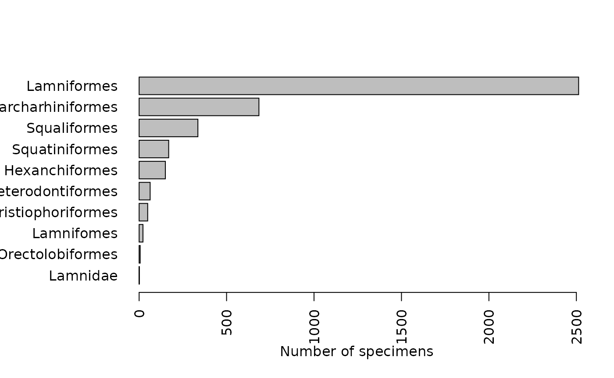
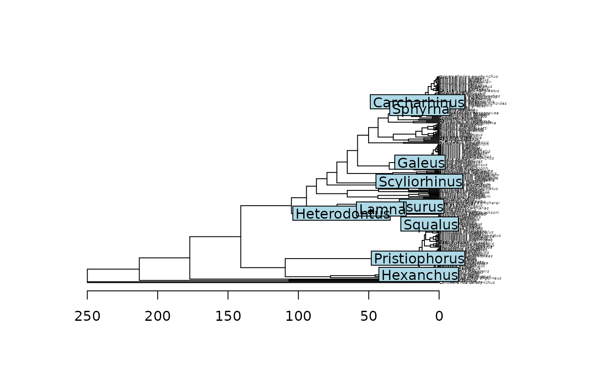

Calibrating a molecular phylogeny of the sharks
Mar 13, 2021
Source:vignettes/sharks.Rmd
sharks.RmdBackground
The time-calibration of molecular phylogenies is essential to many phylogenetic comparative analyses. Time-calibration can be accomplished with e.g. data from fossil specimen that can be assigned to a certain taxonomic group. Specimen ages can be determined by e.g. carbon dating or stratigraphic methods. Node ages are usually assigned using Bayesian or maximum-likelihood methods.
Some of the specimen records at Naturalis hold stratigraphic information. Here we will demonstrate how to extract this data using nbaR and how to create input for the popular tree-calibration function chronos from the phylogenetic analysis package ape.
The phylogeny
As input, we will use a species-level molecular shark phylogeny published by (Vélez-Zuazo and Agnarsson 2011).
The phylogeny is a majority-rule consensus tree inferred from molecular markers using Bayesian inference and comprises 229 species in all eight orders of the sharks (superorder Selachimorpha):

The non-ultrametric tree in the above figure is not time-calibrated, the branch lengths thus represent molecular distances.
Getting chronological data with nbaR
Chronological association is associated with Specimen data, we thus instantiate a SpecimenClient:
library(nbaR)
sc <- SpecimenClient$new()In total, there are eight extant shark orders.
shark_orders <- c(
"Carcharhiniformes",
"Heterodontiformes",
"Hexanchiformes",
"Lamniformes",
"Orectolobiformes",
"Pristiophoriformes",
"Squaliformes",
"Squatiniformes"
)We can then formulate a query condition for specimens that are identified in one of these orders using the operator IN:
qc <-
QueryCondition$new(field = "identifications.defaultClassification.order",
operator = "IN",
value = shark_orders)For many specimens, chronological information is available in the fields gatheringEvent.chronoStratigraphy.youngChronoName and gatheringEvent.chronoStratigraphy.oldChronoName which represent upper- and lower time bounds, respectively. Below, we will formulate a QueryCondition that requires either one of these fields to be non-empty:
## formulate query conditions for fields to be non-empty
qc2 <-
QueryCondition$new(field =
"gatheringEvent.chronoStratigraphy.youngChronoName",
operator = "NOT_EQUALS",
value = "")
qc3 <-
QueryCondition$new(field =
"gatheringEvent.chronoStratigraphy.oldChronoName",
operator = "NOT_EQUALS",
value = "")
## join qc2 and qc3 with operator OR
qc2$or <- list(qc3)Now we can do the query:
## instantiate QuerySpec, give size
qs <- QuerySpec$new(conditions = list(qc, qc3), size = 5000)
res <- sc$query(querySpec = qs)
## how many hits?
res$content$totalSize## [1] 4009Note: By default, a query returns only data for the first 10 hits. Above, we set the size parameter to the QuerySpec constructor to allow the download of up to 5000 values This number was based on the prior knowloedge that there are less than 5000 records for our query; We advise to always check the length of the resultSet against the totalSize of a QueryResult to make sure that all records are downloaded, e.g.
length(res$content$resultSet) == res$content$totalSize## [1] TRUEExploring the data
Now we can explore the data:
## load all specimens
specimens <- lapply(res$content$resultSet, function(x)
x$item)
## check the fields youngCronoName and oldChronoName
unique(unlist(
lapply(specimens, function(x)
x$gatheringEvent$chronoStratigraphy[[1]]$youngChronoName)
))## [1] "Upper Miocene" "Miocene" "Lower Miocene" "Pliocene"
## [5] "Pleistocene" "Chattian" "Oligocene" "Pliocene?"
## [9] "Cretaceous" "Paleocene" "Maastrichtian" "Middle Miocene"
unique(unlist(
lapply(specimens, function(x)
x$gatheringEvent$chronoStratigraphy[[1]]$oldChronoName)
))## [1] "Upper Miocene"
## [2] "Miocene"
## [3] "Lower Miocene"
## [4] "Oligoceen, Rupelien"
## [5] "Mioceen"
## [6] "Middle Miocene"
## [7] "M.mioceen"
## [8] "Recent"
## [9] "Unindentified Age"
## [10] "Pliocene"
## [11] "Oligocene"
## [12] "Unspecified age"
## [13] "Rupelian"
## [14] "Middle Eocene"
## [15] "Ypresian"
## [16] "Priabonian"
## [17] "Pleistocene"
## [18] "Neogene"
## [19] "Eocene"
## [20] "Cretaceous"
## [21] "Kwartaire afzetting op zanden van Grimmertingen"
## [22] "Lower Rupelian"
## [23] "A. karsteni - Niso sp. Ass. Zone"
## [24] "Middle Miocen"
## [25] "? Kwartaire afzetting op zanden van Grimmertingen"
## [26] "Middle Pliocene"
## [27] "Paleocene"
## [28] "Cenomanian"
## [29] "Maastrichtian"
## [30] "Mioceen?"
## [31] "Early Miocene"
## [32] "Recent?"
## [33] "Plio-Pleistocene?"
## [34] "Unspecified Age"
## [35] "Plio-Pleistoceen"
## [36] "Unindentified A"
## [37] "Lower Miocene?"
## [38] "Onder-Plioceen"
## [39] "B.Mioceen"
## [40] "Oligoceen"
## [41] "M.Miocen"
## [42] "Onderste Rupelien"
## [43] "Pliocene?"
## [44] "Tertiair"
## [45] "Upper Eocene"Caution: As you see above, there can be more than one chronoStratigraphy assigned with a specimen. Check how many we have per specimen:
## [1] 1Each gatheringEvent in each Specimen has only one chronoStratigraphy. We thus do not miss data by taking the first one (chronoStratigraphy[[1]]).
Do we have hits for all orders? Below, we make an overview of the field identifications.defaultClassification.order for all specimen.
## make table with counts for each order
tab <-
table(unlist(
lapply(specimens, function(x)
x$identifications[[1]]$defaultClassification$order)
))
par(mar = c(5.1, 8, 4.1, 2.1))
barplot(sort(tab),
horiz = TRUE,
las = 2,
xlab = "Number of specimens")
Caution: There can be multiple identifications for one specimen. Some specimens in our data are for instance assigned to different genera. However, the field preferred in an Identification object states if this is the most accurate and recent identification. The preferred identification is usually the first in the list of a specimen’s identifications. It can, however, occur that there are multiple identifications of which none is preferred; it is best to filter them out:
## get the specimens which have a preferred identification
ident <-
sapply(specimens, function(s)
any(sapply(s$identifications, function(i)
i$preferred)))
## how many do not have a preferred identification?
sum(!ident)## [1] 3
## filter specimens
specimens <- specimens[ident]Let’s further explore the data. To see what part of the animals were preserved, we can look into the field kindOfUnit:
##
## AnimalPart tooth vertebra
## 2 4003 1Almost all of them are teeth.
Getting absolute ages
The type of chronostratigraphic data (as shown above) is given in divisions on the geological time scale, e.g. Miocene. These strings can refer to eons, eras, periods, epochs and ages. In order to translate this into absolute ages, we will use the API of the Earth Life Consortium. This is possible using the convenience function geo_age. For example
## get the upper chrono name for the first specimen
name <- specimens[[1]]$gatheringEvent$chronoStratigraphy[[1]]$oldChronoName
name## [1] "Upper Miocene"
## get the lower and upper bounds for this division
geo_age(name)## Upper Miocene
## early_age 11.61
## late_age 5.33We can now make a table with all interesting data, below this is done for the first 50 specimen objects:
## Get genus, species and chrono information from specimen records
data <-
as.data.frame(do.call(rbind, lapply(specimens[1:50], function(x) {
genus <- x$identifications[[1]]$defaultClassification$genus
if (is.null(genus))
genus <- NA
specificEpithet <-
x$identifications[[1]]$defaultClassification$specificEpithet
if (is.null(specificEpithet))
specificEpithet <- NA
youngChronoName <-
x$gatheringEvent$chronoStratigraphy[[1]]$youngChronoName
if (is.null(youngChronoName))
youngChronoName <- NA
oldChronoName <-
x$gatheringEvent$chronoStratigraphy[[1]]$oldChronoName
if (is.null(oldChronoName))
oldChronoName <- NA
c(
genus = genus,
specificEpithet = specificEpithet,
youngChronoName = youngChronoName,
oldChronoName = oldChronoName
)
})))
## Get absolute ages from earth life consortium
times <-
geo_age(unique(c(
as.character(data$youngChronoName),
as.character(data$oldChronoName)
)))## Warning in FUN(X[[i]], ...): Could not retrieve time values for geo unit
## "Oligoceen, Rupelien" from earthlifeconsortium.org, returning NA## Warning in FUN(X[[i]], ...): Could not retrieve time values for geo unit
## "Mioceen" from earthlifeconsortium.org, returning NA## Warning in FUN(X[[i]], ...): Could not retrieve time values for geo unit
## "M.mioceen" from earthlifeconsortium.org, returning NA## Warning in FUN(X[[i]], ...): Could not retrieve time values for geo unit
## "Recent" from earthlifeconsortium.org, returning NA## Warning in FUN(X[[i]], ...): Could not retrieve time values for geo unit
## "Unindentified Age" from earthlifeconsortium.org, returning NA
## add upper and lower bounds to ages
data$young_age <-
sapply(data$youngChronoName, function(x)
ifelse(is.na(x), NA, unlist(times["late_age", as.character(x)])))
data$old_age <-
sapply(data$oldChronoName, function(x)
ifelse(is.na(x), NA, unlist(times["early_age", as.character(x)])))
data## genus specificEpithet youngChronoName oldChronoName young_age
## 1 Odontaspis vorax Upper Miocene Upper Miocene 5.33
## 2 Cosmopolitodus hastalis Miocene <NA> 5.33
## 3 Cosmopolitodus hastalis Miocene Miocene 5.33
## 4 Cosmopolitodus hastalis Miocene Miocene 5.33
## 5 Carcharhinus? sp. indet. <NA> Lower Miocene NA
## 6 Carcharhinus? sp. indet. <NA> Lower Miocene NA
## 7 Squatina biforis <NA> Lower Miocene NA
## 8 Carcharhinus elongatus <NA> Oligoceen, Rupelien NA
## 9 Isurus benedeni <NA> <NA> NA
## 10 Isurus benedeni Lower Miocene Lower Miocene 15.97
## 11 Cosmopolitodus hastalis Upper Miocene Upper Miocene 5.33
## 12 Cosmopolitodus hastalis Upper Miocene Upper Miocene 5.33
## 13 Lamna sp. Pliocene Miocene 2.59
## 14 Isurus hastalis <NA> Upper Miocene NA
## 15 Cosmopolitodus hastalis <NA> Upper Miocene NA
## 16 Isurus escheri <NA> Upper Miocene NA
## 17 Cosmopolitodus hastalis Pliocene <NA> 2.59
## 18 Cetorhinus sp. Pliocene <NA> 2.59
## 19 Squalus acanthias Pliocene <NA> 2.59
## 20 Indet. <NA> Pliocene Miocene 2.59
## 21 Notorhynchus primigenius <NA> Mioceen NA
## 22 Carcharias acutissimus <NA> Mioceen NA
## 23 Isurus hastalis <NA> Middle Miocene NA
## 24 Isurus hastalis <NA> Middle Miocene NA
## 25 Isurus hastalis <NA> Middle Miocene NA
## 26 Notidanus primigenius <NA> Middle Miocene NA
## 27 Galeocerdo aduncus <NA> Middle Miocene NA
## 28 Galeocerdo aduncus <NA> Middle Miocene NA
## 29 Notidanus primigenius <NA> Middle Miocene NA
## 30 Notidanus sp. <NA> Mioceen NA
## 31 Hypoprion acanthodon <NA> Middle Miocene NA
## 32 Squatina sp. indet. <NA> Middle Miocene NA
## 33 Odontaspis acutissima <NA> M.mioceen NA
## 34 Isurus hastalis <NA> Upper Miocene NA
## 35 Cosmopolitodus escheri <NA> Miocene NA
## 36 Cetorhinus maximus <NA> Miocene NA
## 37 Carcharias sp. <NA> Miocene NA
## 38 Squatina squatina <NA> Recent NA
## 39 Scyliorhinus stellaris <NA> Recent NA
## 40 Centroscymnus coelolepis <NA> Recent NA
## 41 Carcharhinus elongatus Pleistocene Miocene 0.01
## 42 Galeorhinus recticonus <NA> Mioceen NA
## 43 Odontaspis acutissima <NA> Upper Miocene NA
## 44 Isurus hastalis <NA> Unindentified Age NA
## 45 Notidanus sp. indet. <NA> Unindentified Age NA
## 46 Notidanus sp. indet. <NA> Pliocene NA
## 47 Cosmopolitodus hastalis Pliocene <NA> 2.59
## 48 Squalus alsaticus <NA> Oligocene NA
## 49 Squalus alsaticus <NA> Oligocene NA
## 50 Squalus alsaticus <NA> Oligocene NA
## old_age
## 1 11.61
## 2 NA
## 3 23.03
## 4 23.03
## 5 23.03
## 6 23.03
## 7 23.03
## 8 NA
## 9 NA
## 10 23.03
## 11 11.61
## 12 11.61
## 13 23.03
## 14 11.61
## 15 11.61
## 16 11.61
## 17 NA
## 18 NA
## 19 NA
## 20 23.03
## 21 NA
## 22 NA
## 23 15.97
## 24 15.97
## 25 15.97
## 26 15.97
## 27 15.97
## 28 15.97
## 29 15.97
## 30 NA
## 31 15.97
## 32 15.97
## 33 NA
## 34 11.61
## 35 23.03
## 36 23.03
## 37 23.03
## 38 NA
## 39 NA
## 40 NA
## 41 23.03
## 42 NA
## 43 11.61
## 44 NA
## 45 NA
## 46 5.33
## 47 NA
## 48 33.90
## 49 33.90
## 50 33.90Calibrating the phylogeny
Depending on the data, calibration points could be chosen on different taxonomic levels. If there are sufficient specimens determined at species level, one could use the upper- and lower bounds above. It is also possible to average upper- and lower values for a higher taxonomic group, such as genus or family. Since this requires some data cleaning, such as dealing with duplicates, missing data, etc, nbaR offers the function chronos_calib which takes a set of specimen object, and a tree and averages the data for a user-defined taxonomic group and returns a calibration table that can be directly used as input for the function chronos from the package ape. The function also determines the node which will be calibrated in the phylogenetic tree.
The shark phylogeny comes with the package and can be parsed using the package ape:

Genus level
Now we use chronos_calib to get the table at the genus level. chronos_calib also selects the nodes in the tree that will be calibrated. This is done by selecting the most recent common ancestor (mrca) of the species for which the data are averaged.
## make calibration table on genus level
calibration_table <- chronos_calib(specimens, shark_tree, "genus")Note: This function can produce many warnings, a warning is emitted whenever, for some geological division, no data can be obtained from the earth life consortium. This can be due to misspellings or words in foreign languages.
The calibration table looks as follows:
calibration_table## node age.min age.max soft.bounds taxon
## 1 432 2.635714 21.35846 FALSE Carcharhinus
## 2 364 0.870000 25.12714 FALSE Galeus
## 3 311 66.000000 83.20000 FALSE Heterodontus
## 4 243 5.444545 21.84214 FALSE Hexanchus
## 5 320 4.745833 16.46489 FALSE Isurus
## 6 318 28.984615 49.32840 FALSE Lamna
## 7 245 3.503333 26.13571 FALSE Pristiophorus
## 8 346 3.960000 30.67263 FALSE Scyliorhinus
## 9 428 0.010000 20.20600 FALSE Sphyrna
## 10 297 5.708182 30.13364 FALSE Squalus
## 11 237 16.384000 30.11038 FALSE SquatinaNote: It is essential to thoroughly evaluate the calibration table! In this example, for example, the genus Squatina is non-monophyletic and one species is placed somewhere else in the tree. Calibrating the most recent common ancestor node for this genus can therefore result in errors using the calibration routine. We will therefore remove the calibration points for genus Squatina before calibration:
## clean up: one rogue taxon in genus "Squatina"! Skip this genus
calibration_table <-
calibration_table[calibration_table$taxon != "Squatina",]
## run ape's chronos
chronogram <- chronos(shark_tree, calibration = calibration_table)##
## Setting initial dates...
## Fitting in progress... get a first set of estimates
## (Penalised) log-lik = -57.87138
## Optimising rates... dates... -57.87138
## Optimising rates... dates... -57.8675
## Optimising rates... dates... -57.86235
## Optimising rates... dates... -57.86031
## Optimising rates... dates... -57.85691
## Optimising rates... dates... -57.8554
## Optimising rates... dates... -57.85281
## Optimising rates... dates... -57.85052
## Optimising rates... dates... -57.84921
## Optimising rates... dates... -57.84734
## Optimising rates... dates... -57.84571
## Optimising rates... dates... -57.84425
## Optimising rates... dates... -57.84289
## Optimising rates... dates... -57.84166
## Optimising rates... dates... -57.84055
## Optimising rates... dates... -57.83961
## Optimising rates... dates... -57.83867
## Optimising rates... dates... -57.83778
## Optimising rates... dates... -57.83696
## Optimising rates... dates... -57.8362## Warning: Maximum number of dual iterations reached.##
## log-Lik = -57.81222
## PHIIC = 1503.63
## plot tree with time axis
plot(chronogram, cex = 0.3)
axisPhylo()
## plot calibrated genera
nodelabels(calibration_table$taxon, calibration_table$node)
Family level
We can also calibrate the tree on the family level:
## make calibration table on family level
calibration_table <- chronos_calib(specimens, shark_tree, "family")
## run ape's chronos
chronogram <- chronos(shark_tree, calibration = calibration_table)
## plot tree with time axis
plot(chronogram, cex = 0.3)
axisPhylo()
## plot calibrated families
nodelabels(calibration_table$taxon, calibration_table$node)References
Vélez-Zuazo, Ximena, and Ingi Agnarsson. 2011. “Shark Tales: A Molecular Species-Level Phylogeny of Sharks (Selachimorpha, Chondrichthyes).” Molecular Phylogenetics and Evolution 58 (2): 207–17. https://doi.org/https://doi.org/10.1016/j.ympev.2010.11.018.